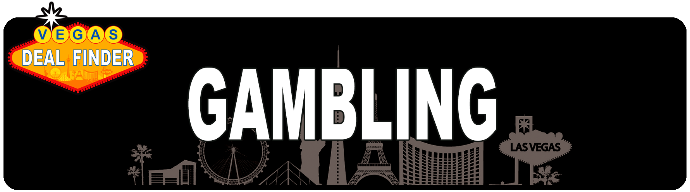

<template>
  <div class="MainContainer">
    <div class="TitleImg center">
      
    </div>
    <div class="single-wide">
      <h1>Where to Play Craps on Fremont </h1>
      
      <h3>Here are VDF's Top Picks for where to play Craps on Fremont St. We love Craps and we love 10X Plus odds and $5 minimum tables. </h3>
      <p><b>Best Craps on Fremont Street Downtown </b> As you might imagine, most of the $5 craps tables in Las Vegas will be found in Old Vegas on Fremont Street, or just off of it. </p>
      <p><b>Main Street Station </b> a block north of the Plaza,  you’ll find $5 minimums, and the best odds downtown: Up to 20x.  </p>
      <p><b> El Cortez  </b>has a minimum place line bet just $3. Located a few blocks east of the Fremont Street Experience. The El Cortez has 10x odds, and the 12 in the Field pays 3x.</p>
      <p><b>The Fremont Hotel and Casino </b>also has $3 minimum craps tables, but only during certain times.</p>
      <p><b>The D Hotel & Casino </b>is a fun, rollicking joint that has helped make Fremont Street fun again. As part of the party, the casino spreads $5 minimum craps games during the days and weekday nights. This is bumped up to $10 minimums on weekend nights. The D offers 10x odds. They also have free lessons at noon. </p>
      <p><b>Golden Gate </b>has a similar $5 day game, which bumps to $10 on weekend nights. Like the D, you can have 10x odds .</p>
      <p>Other Fremont Street casinos, such as the Plaza(up to 10x odds), Four Queens, and Fremont Hotel and Casino, often offer the $5 minimum game at night, including weekend nights. Another hotel just off of Fremont Street, the fairly newly remodeled Downtown Grand, has $5 games. </p>
      <p>Of course, the world famous craps joint, the California downtown, is a must stop for any craps player wanting to have some of that famous golden arm’s luck rub off on you. It too has $5 games. slightly more than 100 people have accomplished the Golden Arm since 1989 at the California hotel-casino: thrown dice for more than an hour straight during a craps game. </p>
      <h5>"I'm not a big gambler anymore. I like to do it. I enjoy it instead of trying to make money off of it, because I realized you can't make money gambling."</h5>
      <h6>― John Daly </h6>
    </div>
  </div>

</template>
